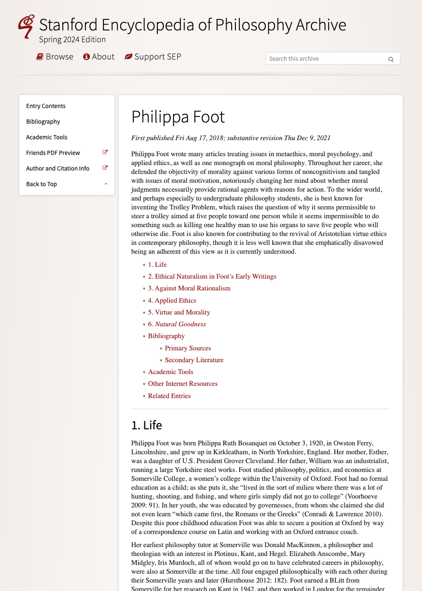
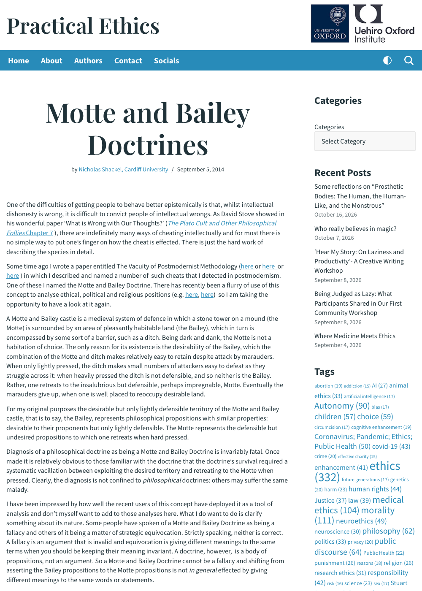
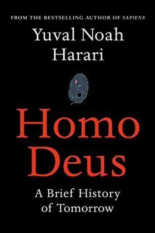
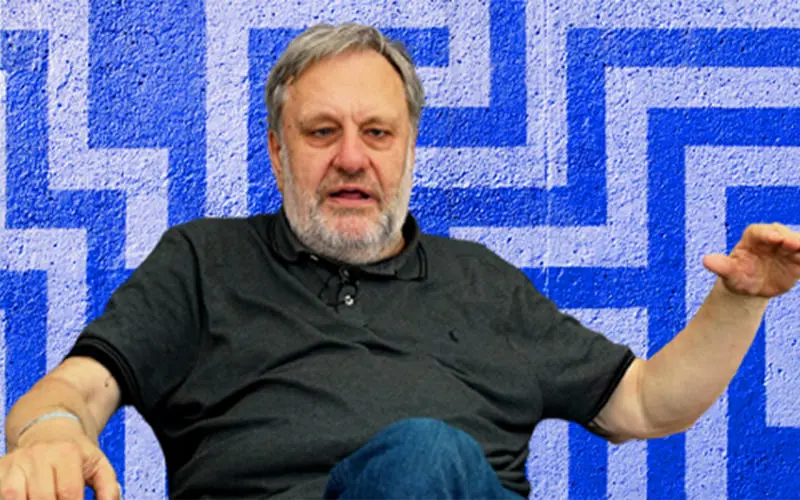

1:04:03 · 15 OPERE
Paradossi morali e senso della realtà.
Il filo del discorso
Una battuta sul pollo che attraversa la strada diventa il punto di partenza per discutere che cosa significhi riconoscere un fatto e che cosa aggiungano le interpretazioni. Il relatore richiama Wittgenstein e propone di estrarre problemi filosofici anche dalle formule più familiari. Il passaggio dalla descrizione alle motivazioni resta però delicato: osservare un attraversamento non basta a dimostrare un’intenzione, e una risposta semplice non esaurisce ogni domanda possibile. Il tema si trasferisce alla responsabilità personale. Il relatore racconta un’intervista a una donna che si dichiara danneggiata dopo una vaccinazione e sostiene che la ricerca autonoma delle informazioni non possa essere delegata interamente. Fromm e Kant offrono i riferimenti principali per discutere obbedienza, conformismo e capacità di giudicare. La scheda mantiene distinto questo argomento morale dall’accertamento del caso sanitario: il racconto non permette di stabilire diagnosi, nesso causale o responsabilità giuridiche e non cancella diritti all’informazione e tutele previste dalla legge. Il dilemma del carrello introduce il conflitto fra conseguenze, intervento e valore della persona. Il relatore critica una lezione Harvard, identificabile probabilmente con Justice di Sandel, e contesta l’idea di ridurre vite umane a un conteggio. La sua variante, che assegna identità morali molto diverse ai personaggi, cambia tuttavia le premesse dell’esperimento. Il discorso passa quindi a Philippa Foot, agli imperativi kantiani e alla possibilità di criteri universali. La voce Stanford letta nel contributo viene ricollocata nel suo contesto: descrive il pensiero di Foot e le sue trasformazioni, anziché definire tutta l’etica delle virtù come equivalenza indiscriminata fra giustizia e interesse personale. L’articolo Motte and Bailey Doctrines di Nicholas Shackel fornisce uno strumento per esaminare gli slittamenti fra tesi ambiziose e versioni più facilmente difendibili. Il relatore lo collega all’uso dei truismi, alle polemiche televisive sui vaccini e alla critica del postmodernismo. La scheda distingue la denuncia retorica dall’esame delle prove: i benefici di un intervento sanitario possono essere studiati mediante confronti e modelli, dichiarandone ipotesi e limiti, anche quando il mondo alternativo non è osservabile direttamente. Sokal e Bricmont, l’intervista di Heidegger, Homo Deus e un’intervista IAI con Žižek compongono l’ultima parte bibliografica del percorso. Il commento si allarga poi alle disuguaglianze urbane e a un futuro descritto come nuovo feudalesimo. Queste interpretazioni restano del relatore; la scheda distingue progetti di prossimità dei servizi, restrizioni al traffico e ipotesi di confinamento. La dichiarazione Prima vennero di Niemöller e il richiamo conclusivo a Osea riportano infine il discorso alla memoria e all’educazione: conoscere può significare imparare da esperienze precedenti, mantenendo aperta la verifica di ciò che viene presentato come evidente.
I libri nel discorso

Tractatus logico-philosophicus
Identificazione probabile
Copertina del volume che comprende il Tractatus: Einaudi · Tractatus logico-philosophicus e Quaderni 1914–1916 · 2009
Copertina del volume Einaudi che comprende sia il Tractatus sia i Quaderni 1914–1916. La voce identifica il Tractatus; l’ISBN appartiene al volume contenitore e l’edizione non è accertata nel filmato.
Wittgenstein, stato di cose / Sachverhalt e modelli di incidenti sono richiamati nel discorso sul linguaggio. Rimando probabile al Tractatus, senza titolo annunciato e senza attribuire a Wittgenstein la battuta del pollo.
Passaggio 3:16 ↗ · Fonti e libro ↗
Risposta alla domanda: che cos’è l’Illuminismo?
Identificazione probabile
Copertina della raccolta che comprende il saggio sull’Illuminismo: Firenze University Press · Sette scritti politici liberi · 2011 · a cura di Maria Chiara Pievatolo
Copertina del volume cartaceo FUP che comprende il saggio, riscontrato dal catalogo universitario. L’ISBN appartiene alla raccolta; il filmato non annuncia un’edizione e il titolo del saggio è un’identificazione probabile della citazione.
Il richiamo a Kant, all’autonomia e al compito di capire con il proprio giudizio rinvia probabilmente alla Risposta sull’Illuminismo. Il testo non è nominato e resta identificazione probabile.
Passaggio 16:32 ↗ · Fonti e libro ↗
Fuga dalla libertà
Copertina: Mondadori, 2022
Autore Fromm e titolo Fuga dalla libertà sono espliciti nell’invito a riflettere sulla delega della propria autonomia.
Passaggio 19:19 ↗ · Fonti e libro ↗
The Moral Side of Murder (Justice, lezione 1)
Identificazione probabile
Miniatura Harvard della prima lezione di Justice: Harvard University · Justice, lezione 1 · video kBdfcR-8hEY
Miniatura autentica del video sul canale Harvard, con il docente e il Sanders Theatre. Non è una copertina del libro Justice e non prova da sola che l’esemplare del filmato discusso dal relatore fosse quello stesso caricamento.
Lezione Harvard in un teatro, vista da milioni di utenti, sul trolley problem: corrispondenza probabile con The Moral Side of Murder, verificata nella pagina ufficiale di Sandel. Il nome non è pronunciato.
Passaggio 23:33 ↗ · Fonti e libro ↗
Philippa Foot (Stanford Encyclopedia of Philosophy)
Identificazione probabile
Schermata della voce Stanford su Philippa Foot: Stanford Encyclopedia of Philosophy · archivio primavera 2024 · revisione del 9 dicembre 2021
Schermata iniziale autentica della versione d’archivio, con titolo e date. La corrispondenza testuale rende identificabile la voce; non stabilisce quale versione esatta abbia consultato il relatore. Nessuna copertina di un volume omonimo sostituita alla voce web.
Il relatore cita una voce Stanford e legge una frase inglese riconoscibile nella sezione Natural Goodness della voce Philippa Foot di John Hacker-Wright, versione d’archivio 2021/2024. Non è una definizione generale di virtue ethics.
Passaggio 29:38 ↗ · Fonti e libro ↗
Fondazione della metafisica dei costumi
Identificazione probabile
Copertina: Laterza · Economica Laterza 122 · Filippo Gonnelli, edizione 1997 e ristampe
Immagine autentica dell’opera, controllata visivamente; l’edizione di riferimento non è attribuita al filmato.
Il confronto fra imperativo ipotetico e categorico richiama probabilmente la trattazione kantiana nella Fondazione, senza titolo esplicito; non duplicato con La metafisica dei costumi.
Passaggio 33:04 ↗ · Fonti e libro ↗
Motte and Bailey Doctrines
Schermata iniziale dell’articolo originale di Shackel: Practical Ethics · 5 settembre 2014 · articolo web
Schermata iniziale autentica della pagina originale, acquisita con Chromium il giorno della verifica. Mostra intestazione, titolo, autore, data e avvio del testo. Non è una copertina editoriale né il frontespizio dell’articolo diverso del 2005.
Nicholas Shackel, titolo Motte and Bailey Doctrines e anno 2014 pronunciati. Riscontrato il testo originale di Practical Ethics, distinto dall’articolo accademico del 2005.
Passaggio 39:24 ↗ · Fonti e libro ↗
Osea
Volume completo: La Bibbia: San Paolo, 2014 · Nuova Versione dai Testi Antichi · edizione di riferimento Copertina del volume completo, non edizione autonoma del singolo libro o poema.
Copertina autentica San Paolo già presente, nuovamente vista: titolo La Bibbia, immagine angelica e marchio dell’editore. Immagine originale 128×200 senza ingrandimenti artificiali, medesimo SHA-256 dell’asset esistente. Il singolo libro o poema è distinto dal volume completo che lo contiene. Traduzione ed esemplare usati nel contributo non sono certificati.
Il relatore indica Osea, capitolo 4, e la mancanza di conoscenza: riferimento al versetto 4,6, riutilizzando il singolo libro biblico.
Passaggio 45:40 ↗ · Fonti e libro ↗
Imposture intellettuali. Quale deve essere il rapporto tra filosofia e scienza?
Copertina: Garzanti · Saggi blu · 1999 · traduzione di Fabio Acerbi e Monica Ugaglia
Immagine autentica dell’opera, controllata visivamente; l’edizione di riferimento non è attribuita al filmato.
Alan Sokal e Jean Bricmont, titolo reso come Intellectual Hoax e spiegato come beffe/inganni intellettuali: identificato il volume già censito come Imposture intellettuali, noto anche come Intellectual Impostures o Fashionable Nonsense.
Passaggio 47:07 ↗ · Fonti e libro ↗
Transgressing the Boundaries: Towards a Transformative Hermeneutics of Quantum Gravity
Identificazione probabile
Frontespizio del preprint dell’articolo parodico: Social Text · 46/47, pp. 217–252 · 1996 · immagine del preprint 1994, revisione 1995
Frontespizio autentico del preprint dell’autore: 28 novembre 1994, revisione 13 maggio 1995. Non è la copertina di un libro né la prima pagina della veste tipografica di Social Text. Il testo è una parodia dichiarata, non un articolo da usare per apprendere fisica.
Il relatore distingue il saggio iniziale di Sokal dal successivo volume con Bricmont. Identificazione probabile dell’articolo beffa originario già censito; titolo non letto nel passaggio.
Passaggio 47:14 ↗ · Fonti e libro ↗
Ormai solo un Dio ci può salvare. Intervista con lo «Spiegel»
Copertina: Guanda, Piccola biblioteca, 9 giugno 2023, a cura di Alfredo Marini, 176 pagine; ISBN 9788823524217. Intervista a Rudolf Augstein e Georg Wolff del 23 settembre 1966, pubblicazione postuma su Der Spiegel del 31 maggio 1976.
Copertina autentica Guanda con titolo, autore, curatore e ritratto. La citazione nel video non prova l’uso della ristampa del 2023; il richiamo conclusivo non è una sintesi dell’intera intervista.
Heidegger, intervista allo Spiegel e titolo Ormai soltanto un dio ci può salvare sono espliciti; l’asserito prestito da parte di Žižek è interpretazione del relatore.
Passaggio 50:36 ↗ · Fonti e libro ↗
Homo Deus. A Brief History of Tomorrow (Homo Deus. Breve storia del futuro)
Copertina: Edizione inglese USA · copertina fornita dal sito ufficiale dell’autore
Copertina autentica inglese americana con autore e sottotitolo leggibili, dal sito ufficiale di Harari. Non viene identificata una specifica ristampa o un ISBN non accertato; l’edizione citata dal relatore non è nota.
Harari e Homo Deus esplicitamente nominati. Non dedotti altri libri dell’autore né identificata un’edizione italiana dalla sola lingua del commento.
Passaggio 51:13 ↗ · Fonti e libro ↗
Genesi
Identificazione probabile
Copertina: Einaudi, I libri della Bibbia / Einaudi Tascabili, 2000; introduzione di Steven Rose
Copertina dell’edizione autonoma Genesi, nella serie I libri della Bibbia, con introduzione di Steven Rose. Edizione scelta come riferimento iconografico; nessuna edizione è confermata nel video.
Il serpente e la possibilità dell’uomo di essere come Dio rimandano probabilmente a Genesi 3. Il collegamento polemico con Harari non è una tesi attribuibile automaticamente al saggio.
Passaggio 51:26 ↗ · Fonti e libro ↗
How Philosophy Got Lost
Miniatura ufficiale IAI dell’intervista con Žižek: Institute of Art and Ideas · intervista How philosophy got lost
Miniatura autentica acquisita dal collegamento og:image/twitter:image della pagina originale. Il caricamento completo della pagina video non è stato necessario per acquisire il metadato pubblico; nessun contenuto riservato scaricato o aggirato.
Titolo inglese How philosophy got lost, IAI e Žižek sono riconoscibili nel parlato; verificati nella pagina originale dell’istituto.
Passaggio 51:57 ↗ · Fonti e libro ↗
Prima vennero… (First They Came…)
Fotografia del testo di Niemöller esposto all’USHMM: Dichiarazione del dopoguerra · fotografia della variante esposta all’USHMM
Fotografia autentica dell’allestimento nella mostra permanente USHMM, con il testo e visitatori. L’immagine documenta la variante museale che inizia con i socialisti; non viene presentata come manoscritto originale, copertina o variante esatta pronunciata nel video.
Niemöller e la sequenza Prima vennero… sono espliciti. Opera registrata come dichiarazione del dopoguerra tramandata in varianti, correggendo la definizione univoca di poesia.
Passaggio 57:31 ↗ · Fonti e libro ↗Minutaggi ricavati da testi automatici, da riascoltare. Le identificazioni probabili sono segnalate accanto ai libri.